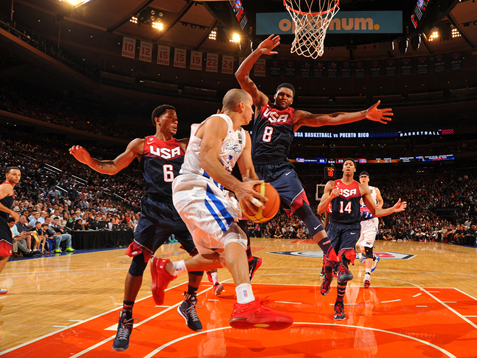

About

Basketball is game played between two teams of five players on the court at the same time on a rectangular court. Each team tries to score points by shooting or aiming the ball into a hoop. The hoop or basket is ciruclar and has a net. Each point is measured at 2 points and 3 points outside of the three point arc. The basket is at 10 feet in regulation.
Basketball is only major sport strictly of U.S. origin. Basketball was invented by James Naismith on December 1, 1891 at a YMCA in Springfield, Massachusetts, where Naismith was an instructor. The National Basketball Association's hall of fame resides in Springfield to honor Naismith.
Play
Basketball is played professionally at many different leagues internationally and the best international league is the National Basketball Association(NBA). In college, players play in the NCAA and split up into different divisions of competetive play. FIBA (International Basketball Federation) was formed in 1932 by eight founding nations: Argentina, Czechoslovakia, Greece, Italy, Latvia, Portugal, Romania and Switzerland. Today it serves as an extremely competetive league and many international players play in the market that defines their basketball style. Women's basketball began in 1892 when Senda Berenson, a PE teacher, modified the rules for basketball. The WNBA is the NBA's sister league and is an established league. It has developed some of the best athletes in the world for its 30 year existence.
Games are played in four quarters of 10 in FIBA or 12 minutes in NBA. College men's games use two 20-minute halves, college women's games use 10-minute quarters, and most United States high school varsity games use 8-minute quarters; however, this varies from state to state in the United States. The game is controlled by officials consisting of a referee and each team is coached by a team in unison.
Equipment and Specifications

A regulation basketball court is 94 by 50 feet. Most courts have wood floring and are of maple wood. The name of each team and the logo is painted on or around the center circle. The rim is placed on two sides of the court and it is stationed around the arcs. There is one arc which is the three point line. Any made shot taken outside the three point line will give the team three points. Any shot inside on on the line will count as two points. There is also a free throw line at the midle which is used for foul shots when a player is fouled.
Players equip themselves with accessories to help enhance their performance. Basketball shoes are a big support in players' footwear and support on the court. Different styles of shoes help the player in different ways. For example, a high top basketball shoe can protect the players ankle whereas a low top shoe can increase mobility of players' achilles. Another big part of the equipment is a jersey, which is a staple of basketball. It is sleeveless and allows players to shoot without any sleeves bagging your arm down.